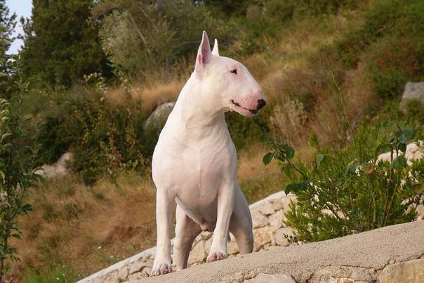

Оглавление
|
БультерьерБультерьер — крепко и гармонично сложен, мускулист, подвижен, с решительным и умным выражением глаз. У собаки веселый нрав, ее можно приучить к дисциплине. Требуется строгая, настойчивая, но спокойная дрессировка.Очень яркая собака, которая не окажется незамеченной никем.Больше любят того члена семьи, кто при нежности и любви проявляет так же строгость и настойчивость по отношению к бультерьеру. Бультерьеры обычно долго помнят сильные обиды и несправедливость. Известны случаи, когда бультерьер через много лет вспоминал и наказывал обидчика. АлабайАлабай — порода бойцовых собак, активно выставляемая на боях против других собак. Серьёзный подход позволит вырастить собаку, которая будет совершенно адекватно реагировать на других животных и людей на улице, но будет страшным врагом тем, кто угрожает вашей семье.Ещё в 1930 годы в СССР была организованна заводская работа с породой. Алабая хотели использовать в охране государственных объектов, но ввиду непростой психологии этой собаки было решено обойтись более покладистыми породами. БандогБандог (бэндог, бандогги) — не порода, а общее название для определенного типа собак, к которому относится несколько разновидностей помесей; чаще всего встречается помесь питбультерьера или бульдога с мастифом. Большинство бандогов имеют устрашающий, монстрообразный вид (широкая грудная клетка, тяжелая кость и мощная, гипертрофированная мускулатура). Их используют для охраны, а также для запрещенных собачьих боев.Первых бандогов вывели в Англии в средние века; днем этих собак содержали на цепи, а на ночь отпускали бегать по двору — и можно было крепко спать, не опасаясь грабителей. Бандоги были злыми и яростными охранниками. |